2 NC population and population change; under/over 18 years old
While family size in the USA has been shrinking since before the start of this dataset1, the decline was not uniform across NC counties. Net population change hides interesting dynamics. The following uses decennial US Census results 1970 to 2020 provided by IPUMS NHGIS.
Growth rates are over ten years.
The tidycensus package offers the following helpful warning when returning results from 2020, which is relevant to this endeavor:
2020 decennial Census data use differential privacy, a technique that introduces errors into data to preserve respondent confidentiality. Small counts should be interpreted with caution. See https://www.census.gov/library/fact-sheets/2021/protecting-the-confidentiality-of-the-2020-census-redistricting-data.html for additional guidance.
2.1 By region
Using the regions defined earlier, let’s look at the total population, 18+ and under 18 for each region. Population is on a linear scale with each row having its own scale to maximize the detail within each row. In all regions the 18+ group has increased, while the under 18 group stayed about the same in regions other than the urban crescent and the coastal counties.
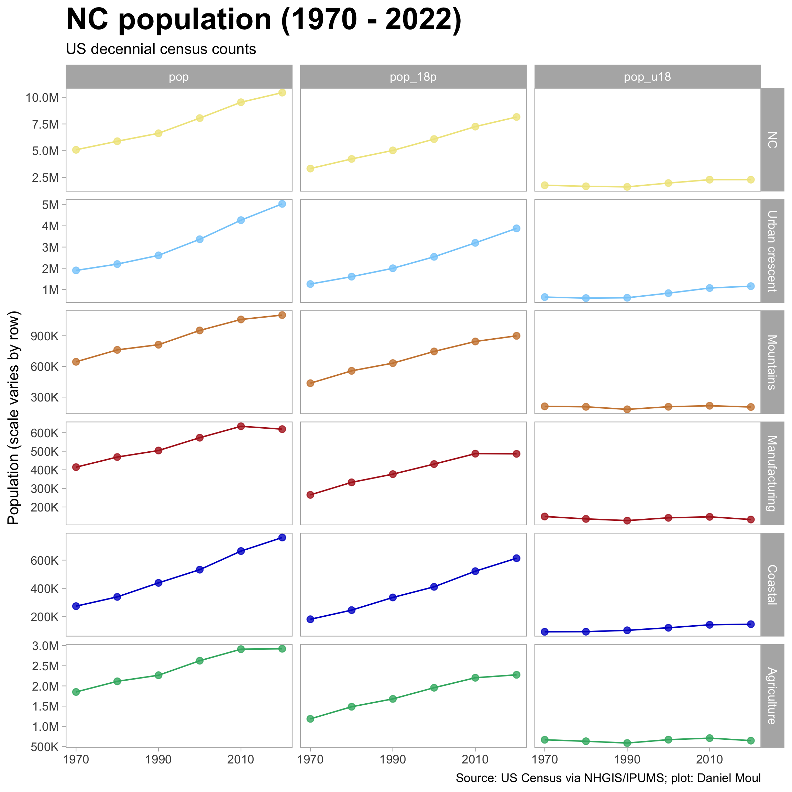
The plot below allows comparison of total population, 18+ and under 18 across the regions. The uniqueness of the urban crescent stands out.
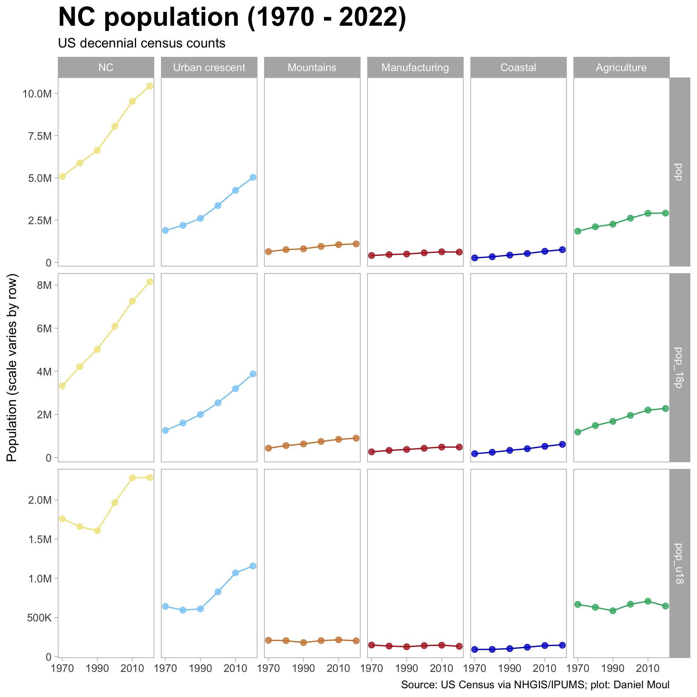
2.2 Ranked by county
We can rank counties by their population. On the left is a simple ranking; on the right population is plotted on the y axis.
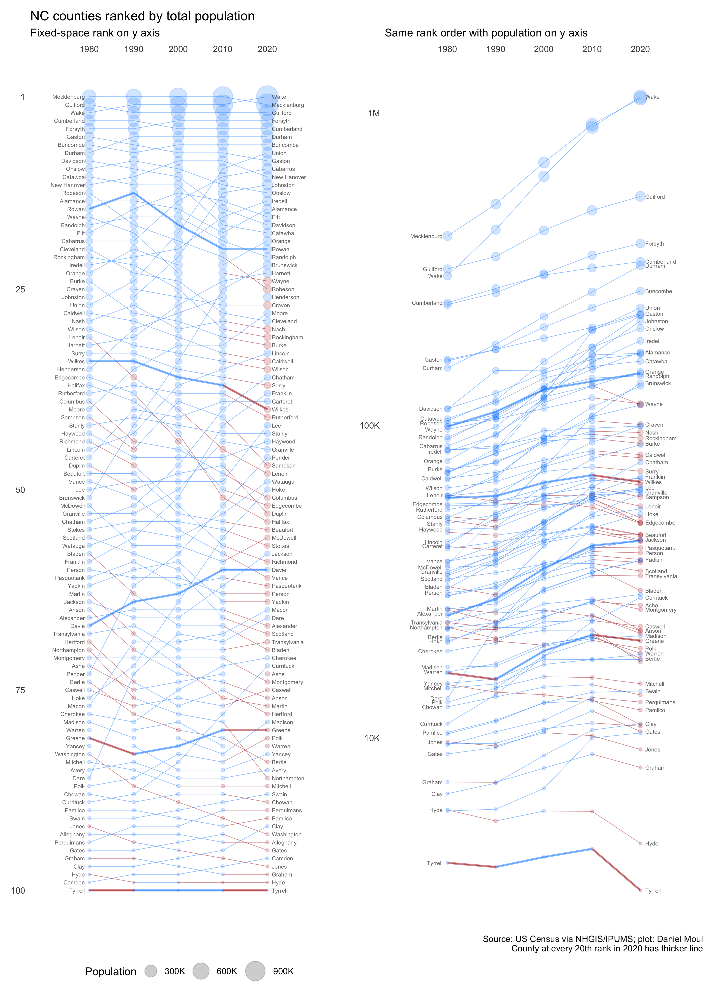
2.3 Growth rates
The plot below allows comparison of growth rates for total population, 18+ and under 18 for each region. In the ten years to 2020 the 18+ population grew in most regions. In contrast, the under 18 population was about net flat; growth in the urban crescent was offset by declines in the other regions.
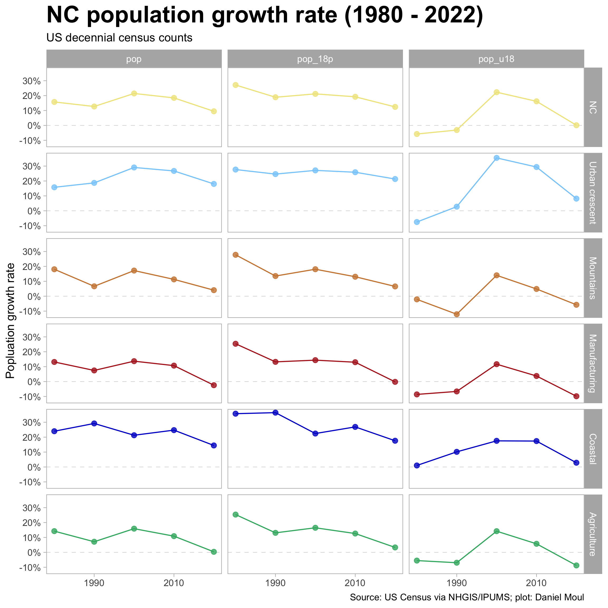
The plot below allows comparison of growth rates for total population, 18+ and under 18 across the regions.
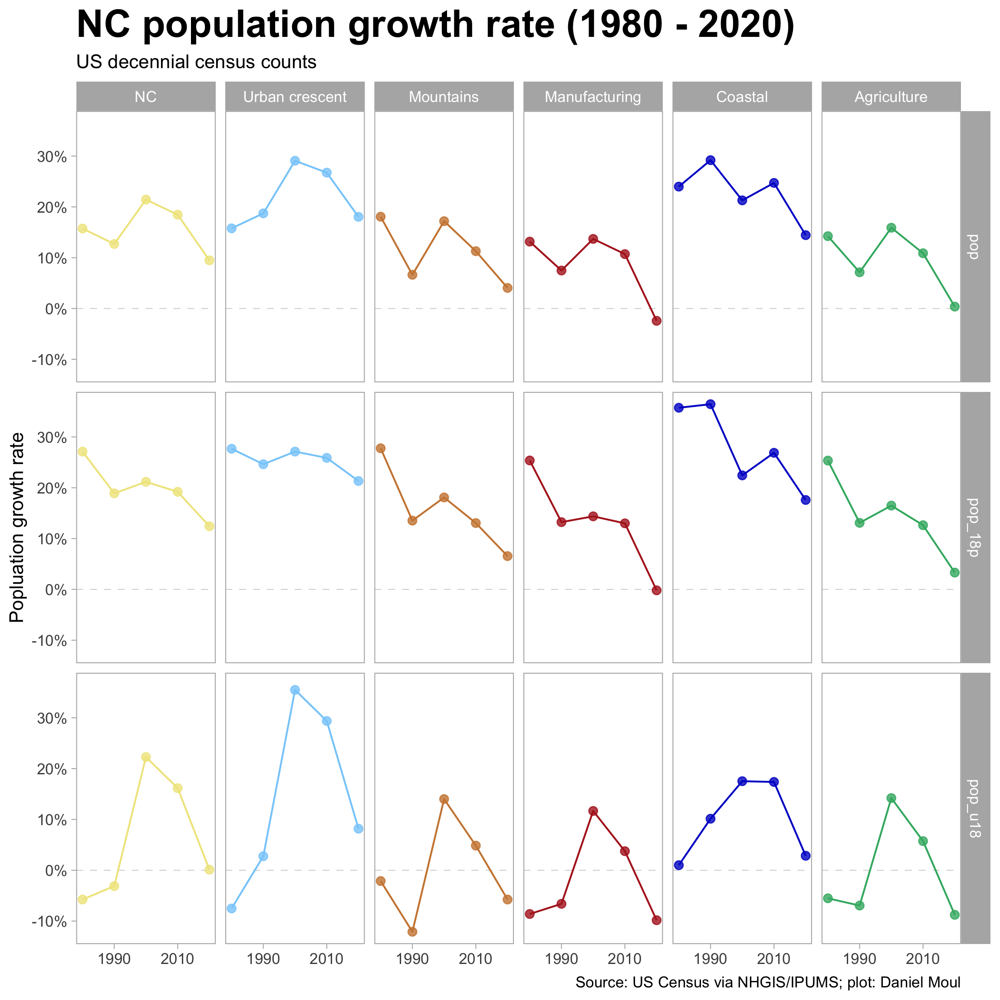
In recent censuses it’s generally true that the counties with larger population grew while those with smaller, shrank. This wasn’t the case in the 10 years leading to the 1980 census. By 2000 it was quite pronounced in the under 18 population, and since then the pattern is visible in all three categories: total population, 18+, and under 18.
The grow rate slowed a lot in the 10 years to 2020.
The regional dynamics are visible when plotting county growth rates on a map. For rural counties in the east and west, the 2000 census offered reason for hope for the future, since the number of children increased; since then the under 18 population has declined again.
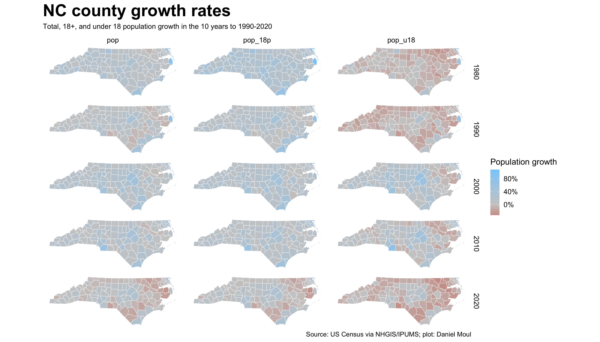
2.4 Components of population change
Population changes are due to (1) births and deaths (“natural increase”); and (2) migration in and out (“net migration”). In the case of North Carolina as a whole, most of the increase is due to net migration, as seen in Figure 2.7 and ?fig-estimates-five-year-four-vars-state-summary.
In Figure 2.7 each thin line shows one county’s rate of natural increase or rate of net migration. The thick line is the weighted mean.
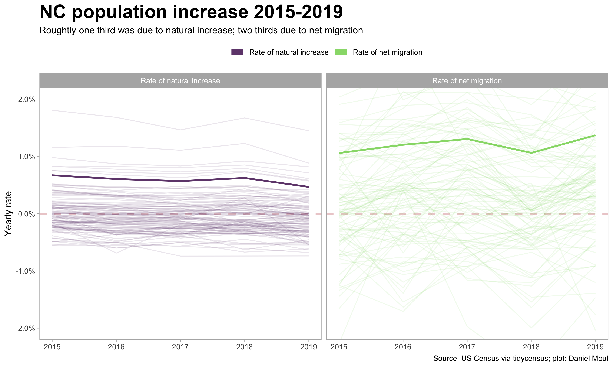
As is hinted in the “RNETMIG” panel in Figure 2.7, county-level dynamics vary considerably. First, let’s look at this by region.
Observations
- The coastal counties and those in the urban crescent are the only regions that are all growing
- Domestic in- and out-migration are the biggest contributors to county population growth or decline
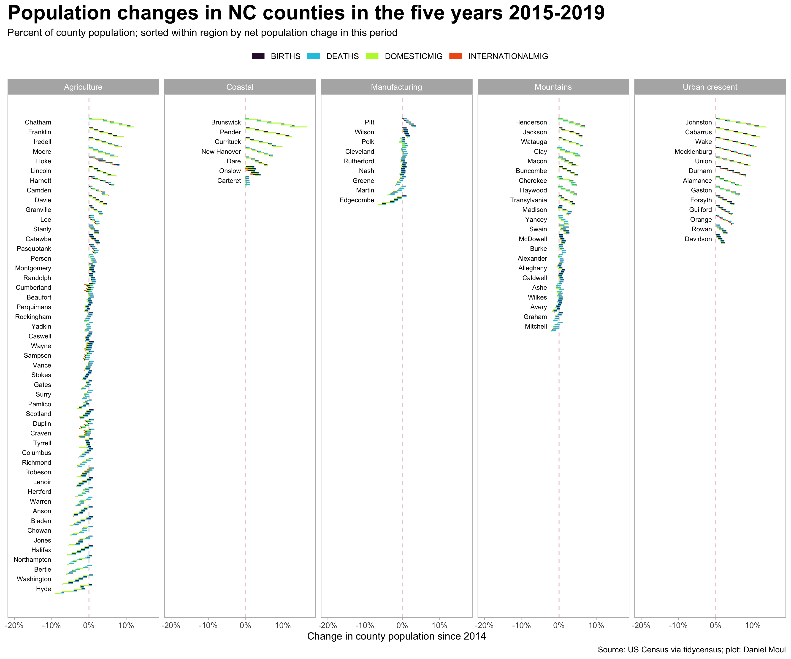
Here too some patterns are easier to see when the counties are put in approximate geographical position (Figure 2.9).
Observations
Most of agricultural counties growing the fastest border a county containing of the larger cities: (1) Chatham, Franklin, Harnett, and Johnston surround Wake; (2) Iredell (spill-over from Charlotte); (3) Henderson and Haywood (near Asheville / Buncombe county)
Exceptions: (2) Hoke (spill-over from Fayetteville in Cumberland); (2) Watauga (contains App State University and the town of Boone); (3) Jackson (not obvious why it’s growing; perhaps benefiting from Buncombe-Haywood growth?)
Onslow, Hoke and Cumberland experienced largest net natural increase:
| Ten counties with greatest positive and negative percent natural increase 2015-2019 Simple average of natural increase rate |
||
| county | region | avg_yearly_rate |
|---|---|---|
| Onslow | Coastal | 1.6% |
| Hoke | Agriculture | 1.1% |
| Cumberland | Agriculture | 0.9% |
| Mecklenburg | Urban crescent | 0.8% |
| Durham | Urban crescent | 0.7% |
| Wake | Urban crescent | 0.7% |
| Harnett | Agriculture | 0.7% |
| Union | Urban crescent | 0.5% |
| Johnston | Urban crescent | 0.5% |
| Pitt | Manufacturing | 0.4% |
| Warren | Agriculture | −0.4% |
| Avery | Mountains | −0.4% |
| Cherokee | Mountains | −0.5% |
| Bertie | Agriculture | −0.5% |
| Ashe | Mountains | −0.5% |
| Mitchell | Mountains | −0.5% |
| Northampton | Agriculture | −0.5% |
| Clay | Mountains | −0.6% |
| Pamlico | Agriculture | −0.6% |
| Polk | Manufacturing | −0.7% |
- Brunswick, Chatham, and Pender experienced largest percent increases due net migration:
| Ten counties with greatest positive and negative percent net migration 2015-2019 Simple average of net migration rate |
||
| county | region | avg_yearly_rate |
|---|---|---|
| Brunswick | Coastal | 3.7% |
| Chatham | Agriculture | 2.6% |
| Pender | Coastal | 2.4% |
| Johnston | Urban crescent | 2.3% |
| Cabarrus | Urban crescent | 2.0% |
| Currituck | Coastal | 1.8% |
| Franklin | Agriculture | 1.8% |
| Clay | Mountains | 1.7% |
| Henderson | Mountains | 1.6% |
| Moore | Agriculture | 1.6% |
| Duplin | Agriculture | −0.8% |
| Jones | Agriculture | −0.8% |
| Craven | Agriculture | −0.9% |
| Halifax | Agriculture | −0.9% |
| Cumberland | Agriculture | −0.9% |
| Robeson | Agriculture | −0.9% |
| Onslow | Coastal | −1.1% |
| Washington | Agriculture | −1.1% |
| Edgecombe | Manufacturing | −1.2% |
| Hyde | Agriculture | −1.6% |
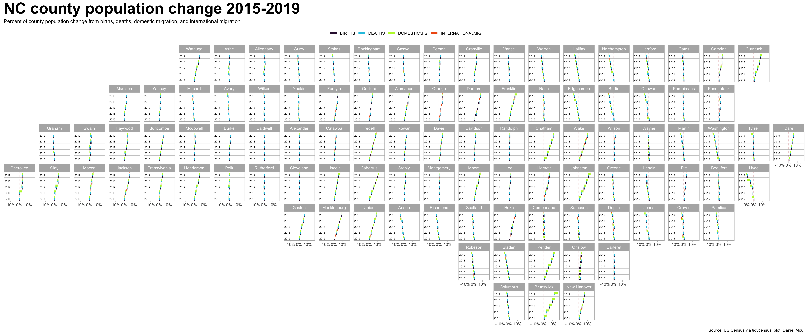
For ease of reference, below are the same plots made larger and placed in alphabetical order.
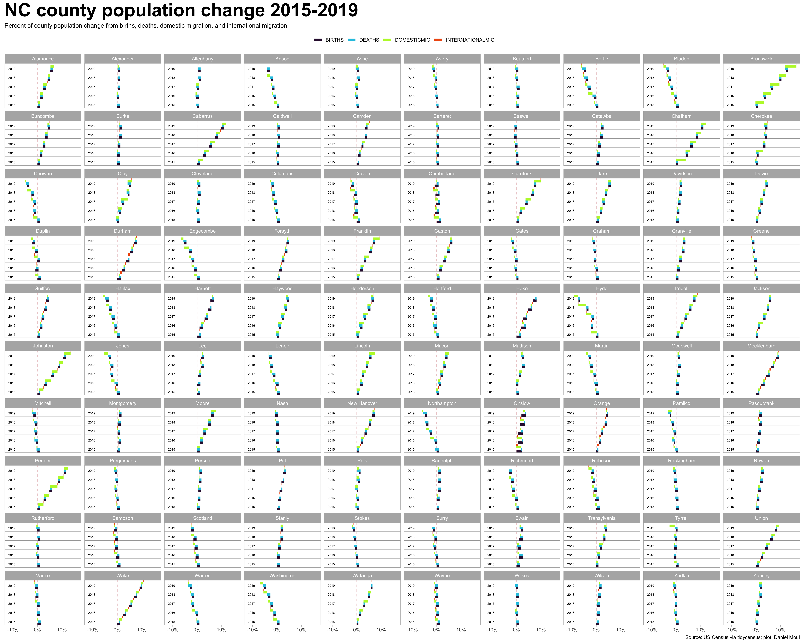
2.5 Population under 18
From 1970 to 1990 there was a slight association between a larger portion under 18 and smaller counties. Starting in 2000 there was a strong move in the other direction, and the association has only gotten stronger since: counties with a larger proportion of children tend to have larger populations.
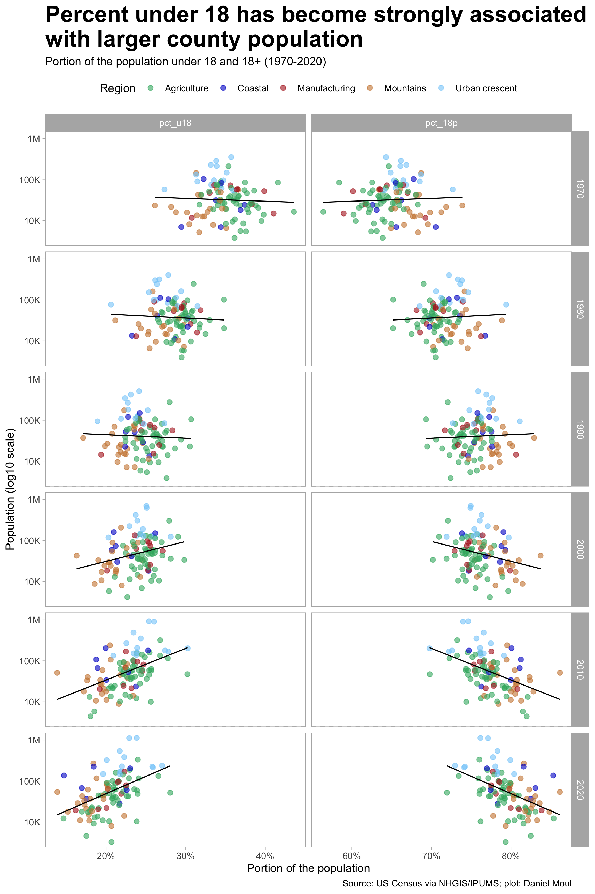
While growth rates are interesting, they hide changes in the mix (the proportion of one group compared to the others). Since the 18 and over group has been growing faster than the under 18 group as seen in Figure 2.1, the proportion of youth has been declining; as noted earlier, this is a national trend as families size declined.
In every NC county, the proportion of the population under 18 declined since 1970–and except for counties the urban crescent and at the coast, the count declined in most counties in the 10 years before 2020 (see Figure 2.5). In most counties the biggest drops in proportion occurred in the 10 years to 1980 and 1990 (and maybe in earlier decades not included in this dataset). In the ~5% of cases in which the proportion of the population under 18 grew between two decennial censuses, arrows in the plot below point to the right, completing a loop.
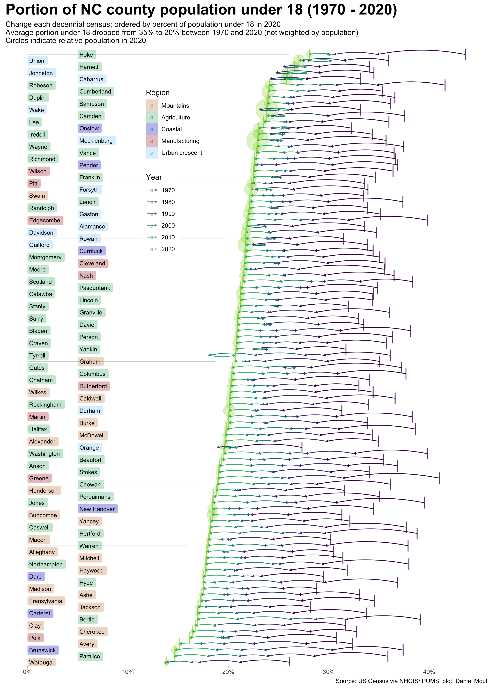